RE: MangoHealth Home Redesign
Areas of Redesign
+ Home Screen + Workflow + Adding Prescription
Marvel Demo
Home Screen Redesign
The current homescreen for Mango Health is used as a hub for accessing different parts of the application, providing consolidated previews for each main section of the app.
With the redesign, the homescreen is built around the main action (inputting dosage) required by the user in order for the other sections to serve actual value.
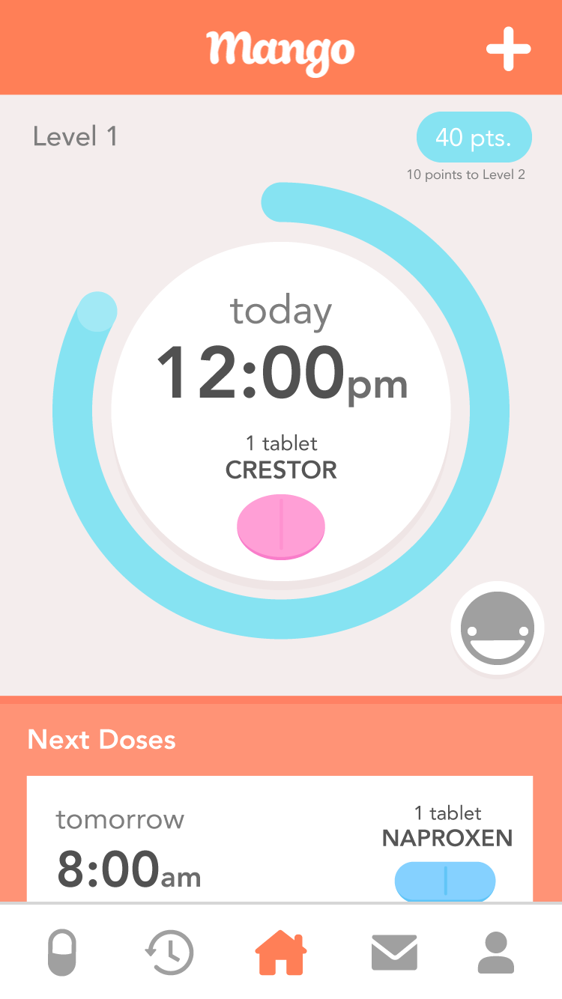 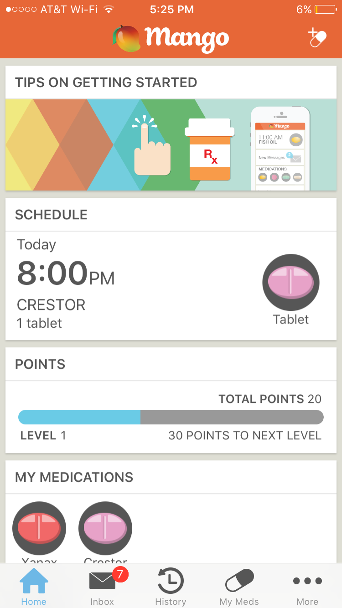Redesign (left) ; Current (right)
Objective
+ Encourage habitual user input for greater user retention
Solutions
1. Prominent and quicker user input (dosage) 2. Visual correlation between points and input 3. List of soon upcoming doses
1. User Input
With the current homescreen's purpose as a access hub, the interaction for inputting a dosage takes 3 screens to perform. The redesign minimizes this workflow to simply hold down the dosage button and your dosage is completed. A confirmation of action then performs to indicate success and transition the next upcoming dosage into the circular home.
Focus
+ Visual incentive + Communicate result of action + Seamless transition + Accessibility with larger text
Reason for holding down
Tapping may make the action easily dismissive. Holding down requires a bit more investment, deterring user from inputting falsely. 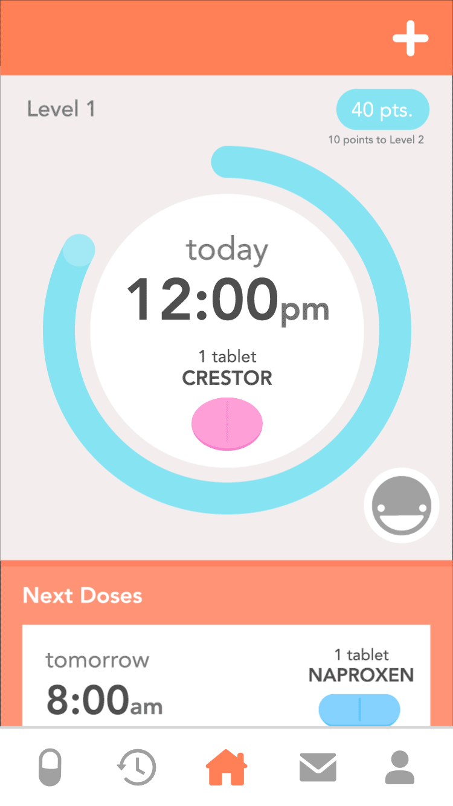Redesign Dosage Action (left) ; Current Dosage Action (right)
Purpose of animation
Not only for visual incentive and indication, but also can mask shift through the queue (in example, from Crestor to Naproxen). A concern was made for making animations which were too flashy, but the time it occupies is beneficial in requiring the user to take time in taking their medication, not allowing for false inputs.2. Points
There are two motivations to the redesigned points "bar": 1. The actions which gains you points (input dosage), is now surrounded by the bar itself, visualizing a direct relationship. 2. The circular nature reflects the levels, where you move forward to start again at a new level, performing the same task.
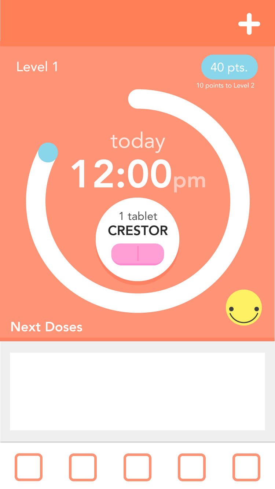 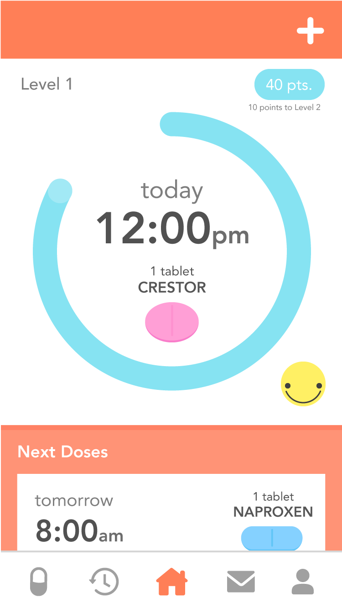First Iteration (left) ; Second (center) ; Final (right)
3. Next Doses
Upcoming doses in the current MangoHealth may only be viewed in the schedule screen in an accodian calendar. In the redesign, the next few immediately upcoming doses can be quickly viewed by scrolling down. This reminds users to come back, and use the app again, increasing retention.
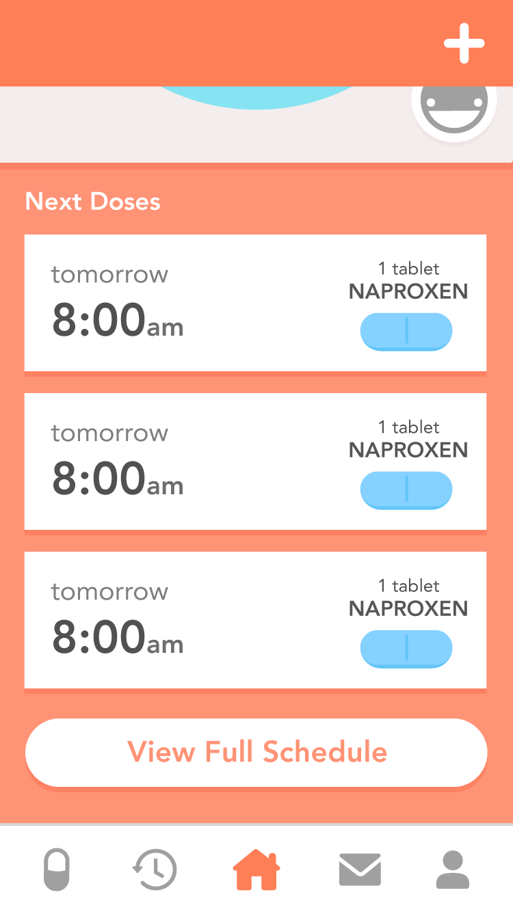Relationship with current dose and next dose
Current dose (circle) and next dose (lower rectangles) share a style as well as UIView structures. Other than centering the dayLabel and overall size, the two UIViews are kept the same, allowing for modular development and a clearer indication of the head and the rest of the queue.Add Prescription
With the add prescription screen, the format and visual brand from the home screen is continued, showing how certain components translate. Here, we will explore further the visual aspects of the UI.
Sacrifice for Simplicity
As seen with the navigation icons, the redesigned icons include less detail and explicit description. Although minimalism may cause a bit of initial confusion, it will also cause exploration of each area, moving the user automatically past the home screen. 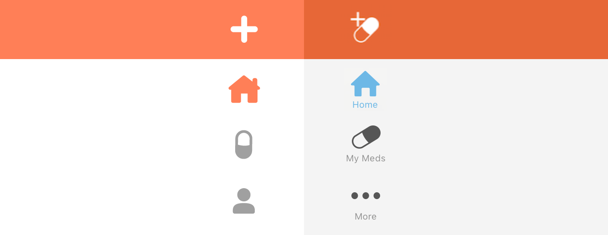Redesigned custom icons (left) ; Original icons (right)
Adding Prescription Screens
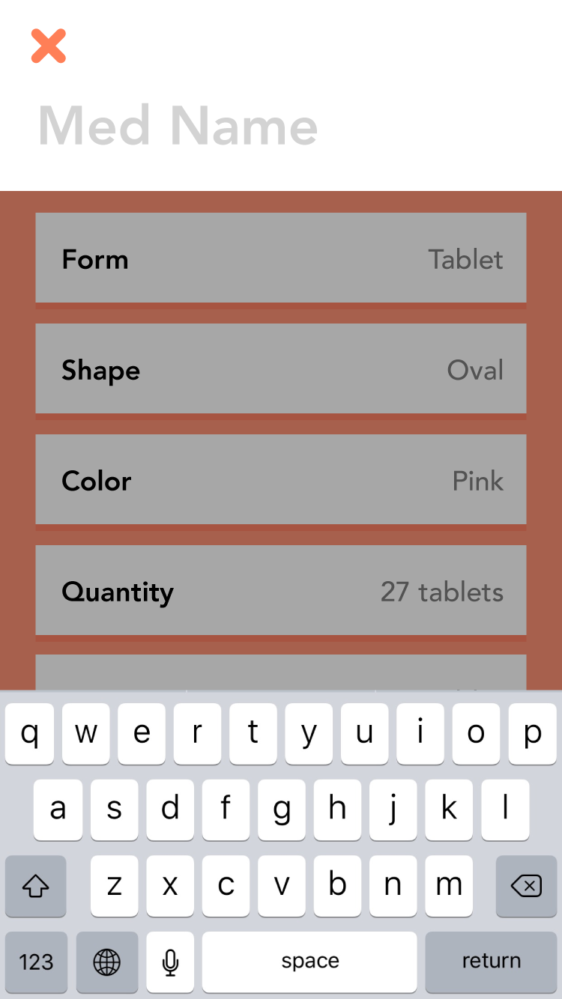 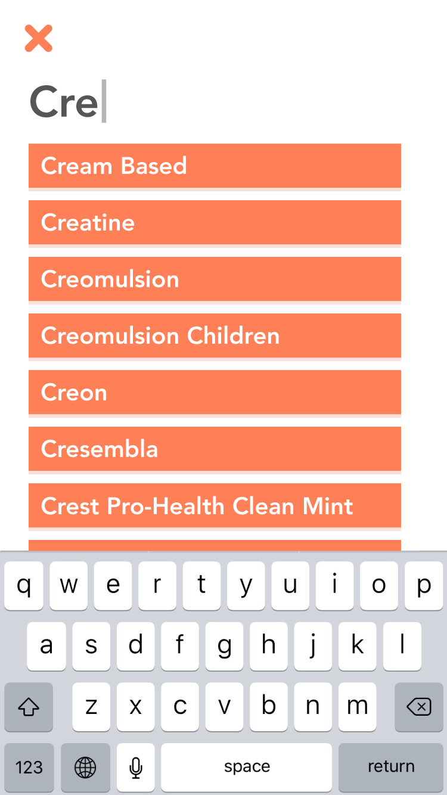Initial Name Input (left) ; Name Autocomplete (right)
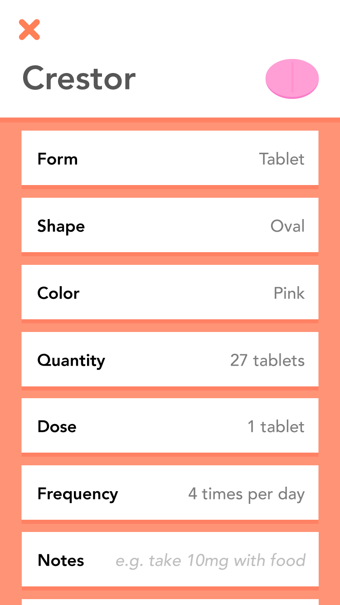 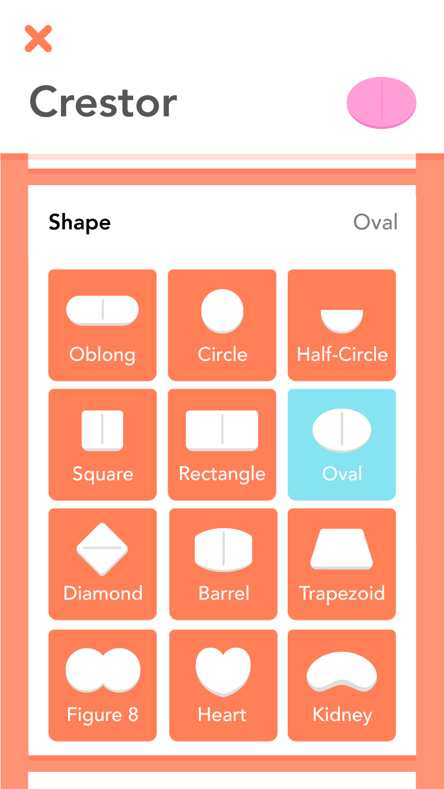Autofilled Form (left) ; Expanded Shapes Form (right)
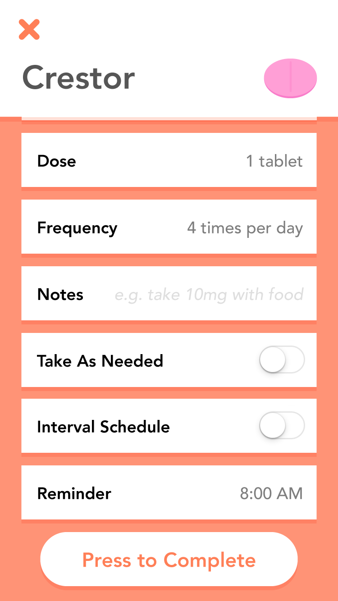Bottom of Form with Complete Button